Scene 1Warm-Up
▶ Start hereHow your Wonder Films lessons work1-minute videoOpen ▾
🎯 TodayI can…
- describe what happens to water when it is heated and when it is cooled.
- record observations of water changing from one state to another.
- explain how temperature causes water to change state using evidence from my investigation.

🔎 Mystery specimenWhat's on the outside of this cup?
What to do: Press Inspect specimen. Move the magnifying lens over the cup, then tap 3 things you notice.
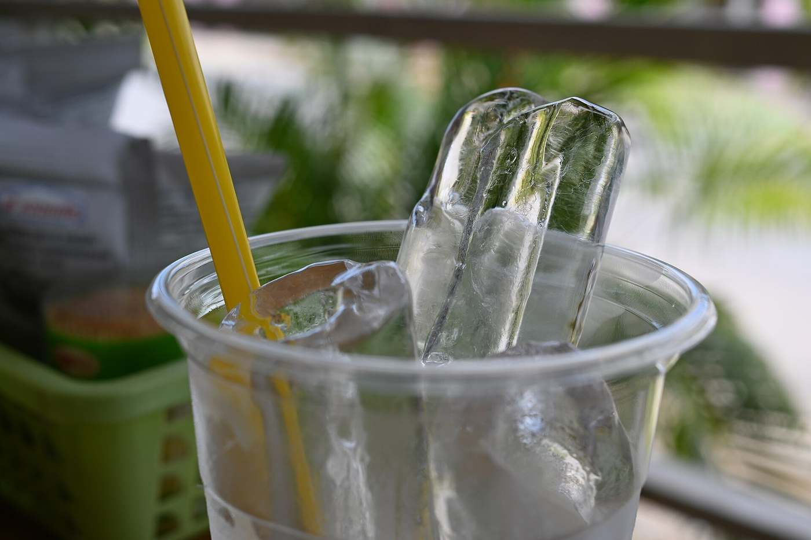
📚 Word WallWords scientists use
What to do: Tap or click each card to flip it and read what the word means.
Scene 2The Lesson
🌱 Part 1Temperature and Water
Water can be a solid (ice), a liquid, or a gas (water vapor). Temperature decides which one. A thermometer measures temperature in degrees. Pure water freezes at 0 °C and boils at 100 °C.
Scientists record data, like temperatures and what they see. Data helps them find patterns.
🎞️ Put the scenes in orderWhat happens when you heat ice, then cool the steam?
What to do: Drag each photo into the film strip, from first to last. You can also tap a photo, then tap a frame. Get the order right and your strip becomes a movie.
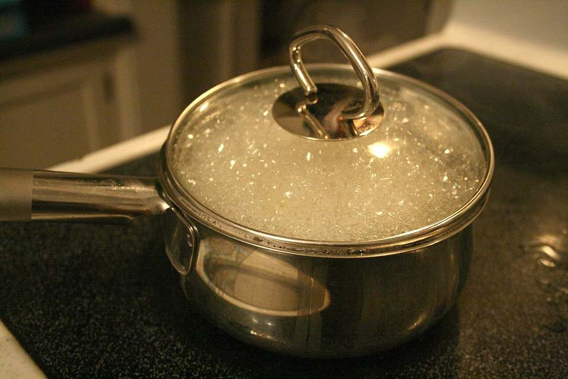
Drops cover the inside of the lid. Max says, "The lid is leaking water." What do you think?
🌤 Part 2Heating Water
When you add heat energy, water gets warmer. Ice melts into liquid water. Keep heating, and the water boils. Big bubbles form all through it. They are not air. They are water vapor.
Water vapor is invisible. The white cloud you see over a pot is tiny drops that formed when the vapor cooled. That's condensation!
🧪 The Drip TestWhere do the drops come from?
What to do: Follow the steps one at a time. You will pick, test, and then explain.
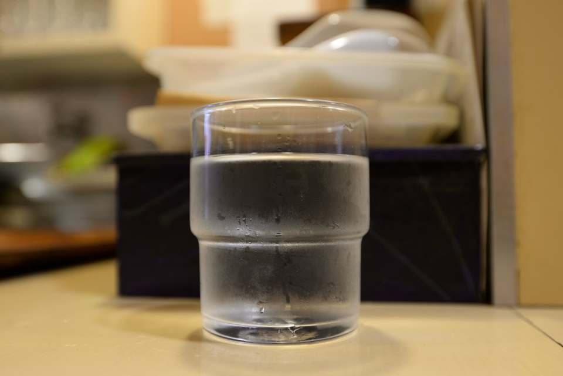
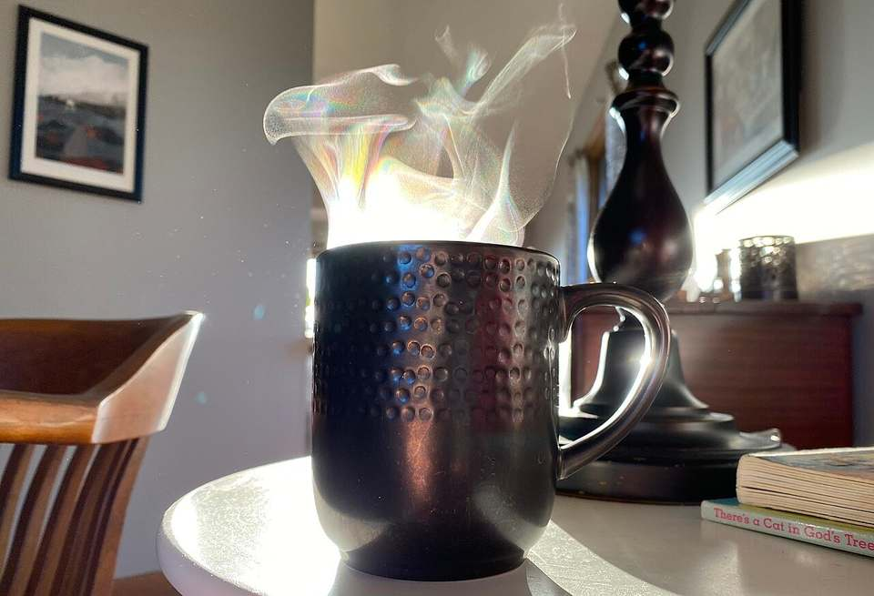
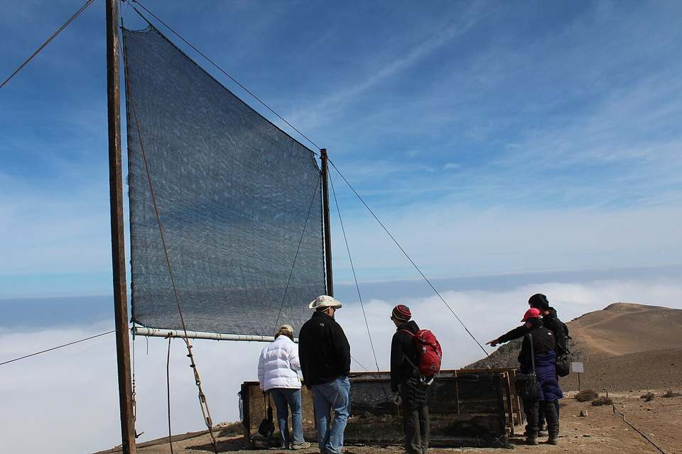
🌍 Part 3Cooling Water
Taking heat away works the other way. When water vapor touches something cold, like a lid or a cold glass, it condenses into drops. Water that gets cold enough freezes into ice.
The Sun heats the things it shines on, like the water in a puddle or a spring. When the Sun sets or hides behind a cloud, the water loses heat and cools down.
♨️ The Steam TowerFrom high in the air down to the bottom of a boiling pot
What to do: First, make a prediction. Then brush the glowing step: drag across it (or tap it again and again) until the photo shows.
What do you predict is inside the big bubbles in boiling water?
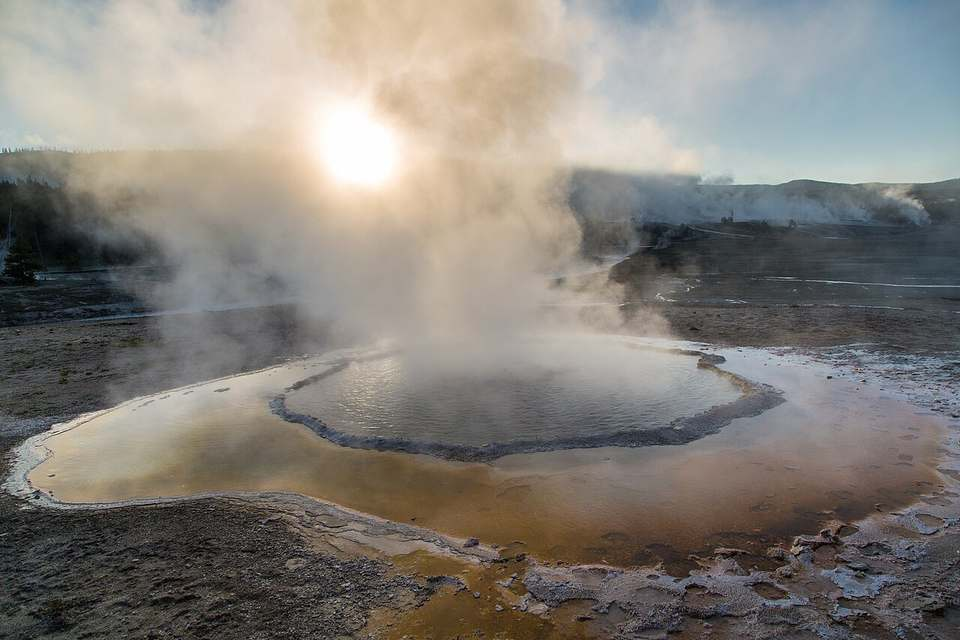
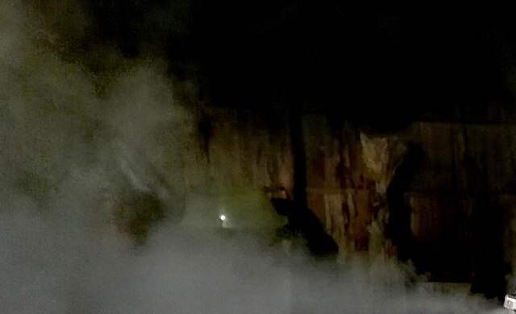
Step 1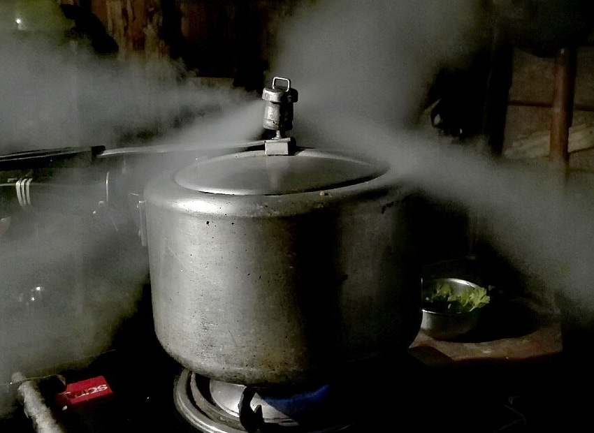
Step 2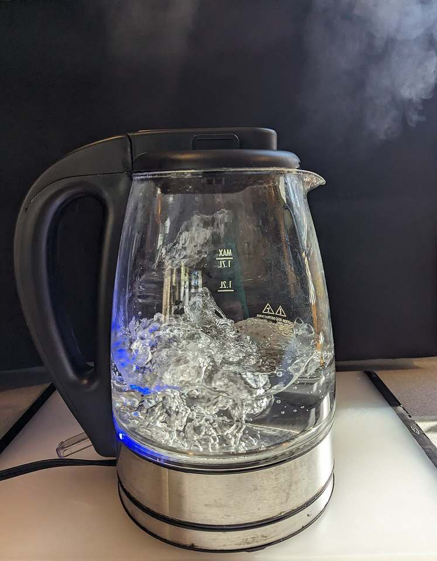
Step 3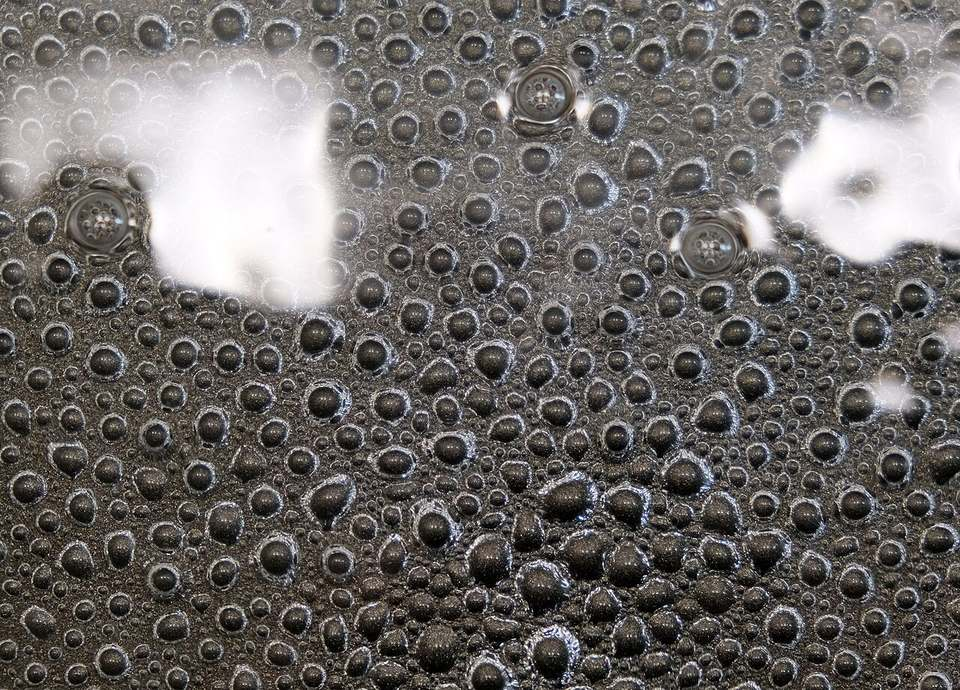
Step 4Heating turns liquid water into water vapor. Cooling turns it back into liquid drops. The bubbles in boiling water are water vapor, and the white steam cloud is tiny drops of liquid.
Ava says, "The bubbles in boiling water are air bubbles." Is Ava right?
Steam Trains to Key West
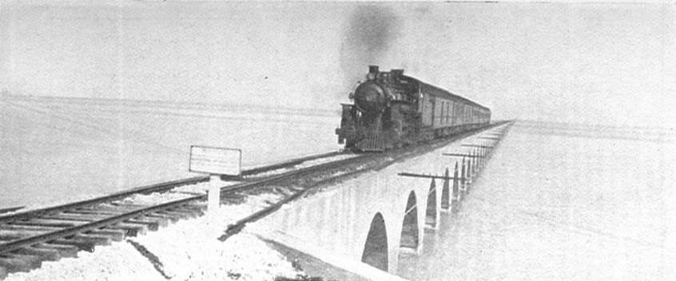
Long ago, many trains in Florida ran on steam! Inside the engine, a fire boiled water. The water vapor pushed hard on metal parts, and that turned the wheels.
In 1912, steam trains began running all the way to Key West, on long bridges over the sea. People called it the railroad that went to sea.
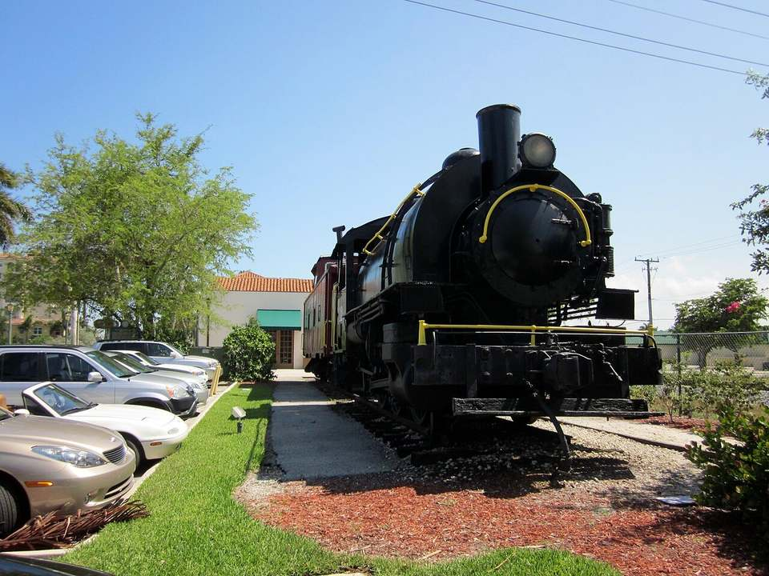
🕵️ Part 4Thermometer Files
What to do: Pick 3 files, one at a time. Tap a clue, then name the change. Predict if it was warming up or cooling down, and watch the place appear.
| File | My data | Change | Temperature | My evidence |
|---|
🌍 Rebuild the sceneUse your evidence to rebuild the scene OPTIONALOpen ▾
What to do: Pick one you solved. Pick the place it points to, then pick the living things that belong there.
Pick one from your chart and explain it.
Start with: "File __ shows…"
Scene 3Self-Check
What happens to ice when heat energy is added?
What is condensation?
A student records that ice melted at a warm temperature and water froze at a cold temperature. What pattern does this data show?
Scene 4Assignment
🔍 Part AInvestigation data table
What to do: Read each one. Pick the best answer, or type your answer.
1. Stage 1 · Ice. Thermometer: 0 °C. It is hard and keeps its shape. What state is the water in?
2. Stage 2 · Melted. Thermometer: 20 °C. It flows and fills the bottom of the pot. What state is the water in?
3. Stage 3 · Boiling. Thermometer: 100 °C. Big bubbles and steam. What is happening to the water?
🚀 Part BShort answer
What to do: Answer in complete sentences. Use your science words.
1. What happened to the water each time the temperature changed? Describe the pattern you observed.
2. If you left a glass of ice water outside on a hot summer day, what would happen over time? Explain each change.
✍️ Write and explainWhat does your investigation data tell you about how temperature changes the state of water?
What to do: Pick one from your evidence chart. Answer the three questions. Use at least one of the science words under the boxes.
Start with: "My investigation showed me that temperature…"
Start with: "I know this because when heat was added…"
Start with: "The pattern in my data tells me that…"
🎨 Part CDraw and label
What to do: Draw a comic strip with four panels showing the Pot Lab: ice, melted water, boiling water with steam, and drops on a cool lid. In each panel, draw the water and label its state: solid, liquid, gas, liquid again.
🎬 Your question from Scene 1Can you answer it now?
What do you still wonder about? Write your question here. Then answer it.
📋 My answersEverything you wrote, in one place
(Your answers show up here as you write.)
How to turn in: Copy your answers and paste them into the Canvas assignment. Or download the file and upload it. Then press Save my drawing in Part C and upload your drawing too.
✅ Checklist
What to do: Tap each item when it is done. Items you finish on the page check themselves.
- My evidence chart has 3 thermometer files and my explanation.
- Part A: my investigation data table.
- Part B: questions 1 and 2.
- Part C: my drawing and both labels.
- Write and explain, with at least one science word.
🎬 Premiere my water storyYour exhibit
What to do: Check your exhibit. Pick the one you wrote about, add your first name, then press Premiere film.
I observed…
The change I'll look for in my kitchen is…
My evidence…
It tells us…
🎞️ This film's frames
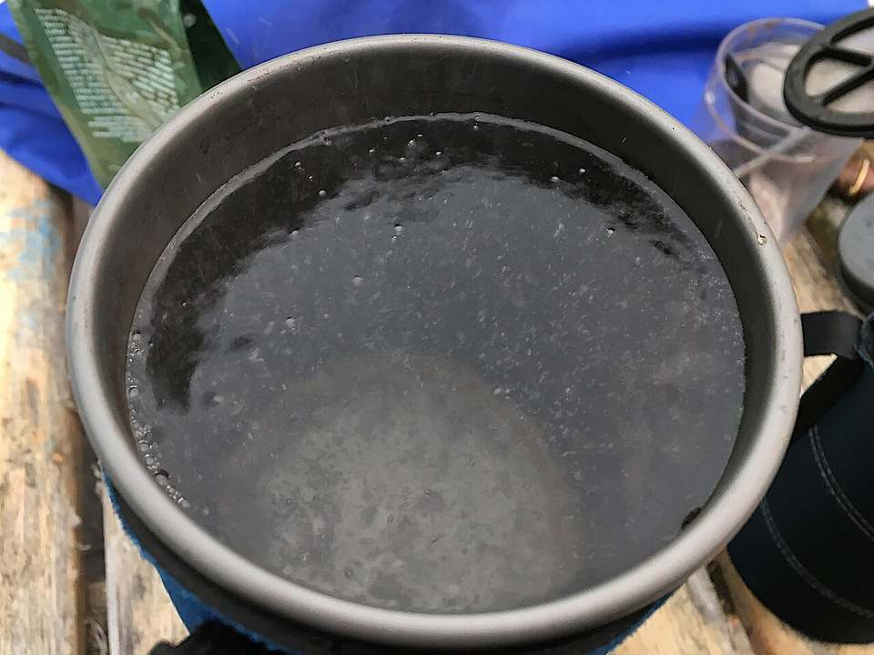
The Pot Lab
The Drip Test
The Steam Tower
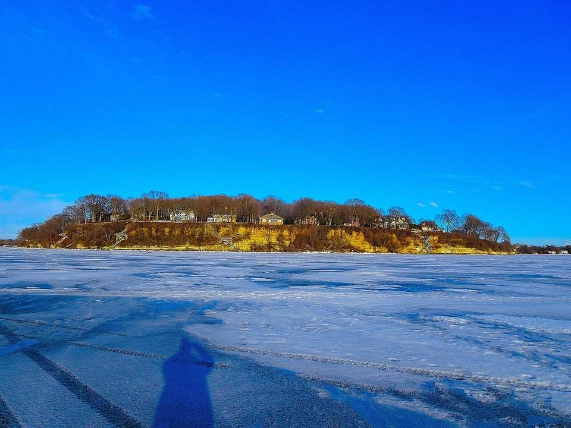
Thermometer files
Earn all four frames in the Lesson, then finish the checklist.
🔜 Coming up nextComing up next: 28.01
How Does Energy Cause Change? Next time, find light, heat, sound, and motion energy, and see how energy makes things move and change.
Photo and music credits
- Atrapanieblas en Alto Patache, Pontificia Universidad Católica de Chile, CC BY-SA 2.0
- Frozen Lake Mendota - panoramio (2), Corey Coyle, CC BY 3.0
- Lake Mendota - panoramio (26), Corey Coyle, CC BY 3.0
- Bottles (4782930999), Andrew Smith from Seattle, WA, USA, CC BY-SA 2.0
- Siesta Key Beach. Sarasota - panoramio - 4net (6), 4net, CC BY 3.0
- Two Seminole women cooking cane syrup, Seminole Indian Agency, Florida, 1941 …, Unknown authorUnknown author or not provided, Public domain
- Canal Point Florida Sugarcane from Air 1968, Andrew Migneault, Public domain
- Salt pans (Bonaire 2014) (15730479035), Paul Arps from The Netherlands, CC BY 2.0
- Pekelmeer salt pans (Bonaire 2014) (15694051252), Paul Arps from The Netherlands, CC BY 2.0
- A field of hailstones, Nerdybeng at English Wikipedia, Public domain
- CumulonimbusFlorida, Googie man (talk) from enwp, CC BY-SA 3.0
- Crested Pool 3, James St. John, CC BY 2.0
- Boiling lake in Yellowstone National Park, Brocken Inaglory, CC BY-SA 3.0
- Mexico Beach, FL USA Blue Sky ^ White Sand Beach 2011 Panoramic Sony - panora…, #KenFL74, CC BY-SA 3.0
- Old Faithful eruption and cone seen from Geyser Hill (49597800596), Yellowstone National Park, Public domain
- Lake Alice Winter, Suiseiseki, CC BY 3.0
- Lake Alice Fog, Kristopher Anderson, CC BY-SA 2.0
- Morning in the Everglades I 2023 Photo Contest (53382724599), evergladesnps, Public domain
- Manatees in Blue Spring2, Mwanner at en.wikipedia, CC BY-SA 3.0
- Blue Spring State Park run01, Ebyabe, CC BY-SA 3.0
- Wekiwa Springs State Park - July 2019, Bart Everson, CC BY 2.0
- Early morning mist (9610162672), U.S. Fish and Wildlife Service Southeast Region, Public domain
- Boca Raton locomotive 1, Infrogmation of New Orleans, CC BY 3.0
- Almost boiling water, kallerna, CC BY-SA 4.0
- Boilingkettle, Plorpy2, CC BY-SA 4.0
- Pressure cooker releasing water vapor, Nayan j Nath, CC BY-SA 4.0
- 12-07-14-wikimania-wdc-by-RalfR-29, Ralf Roletschek (talk) - Infos über Fahrräder auf fahrradmon, CC BY-SA 3.0
- Melt - Flickr - ksjantz, Kathy Jantz, CC BY 4.0
- A Watched Pot Certainly Boils (44099640352), Alan Levine from Mortlach, Canada, CC0
- Water drops on glass texture, Photos public domain.com, Public domain
- 2008-07-05 Water boiling in cooking pot, Ildar Sagdejev (Specious), CC BY-SA 4.0
- Sunrise at Crested Pool (36088633314), Yellowstone National Park, Public domain
- DFC 0135 A clear plastic cup with large ice cubes and a yellow straw sitting …, PattayaPatrol, CC BY-SA 4.0
- Ice water (11462178684), Kirt Cathey from Shibuya, Tokyo, Japan, CC BY 2.0
- Coffee steaming in a mug, PedanticNarrativeController, CC0
- Florida east coast causeway to Key West (CJ Allen, Steel Highway, 1928), Andy Dingley (scanner), Public domain
- Music: Gymnopédie No. 1 (Erik Satie), public domain recording (Musopen, via Wikimedia Commons).
- Opti the owl: Optima Academy. Sound effects are made by the page. The Pot Lab movie, the Drip Test, and the Steam Tower are models; every place photo is real.